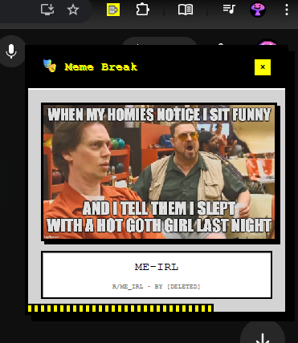

üé≠ What is Meme Break?
Meme Break is a Chrome extension that shows you random memes at regular intervals to keep you entertained during work sessions. Because who doesn't need a good laugh while grinding through spreadsheets? üòÑ
✨ Features
Get memes every 15 minutes, 30 minutes, 1 hour, or 2 hours
Sleek design with smooth animations
Popups close automatically after 30 seconds
Close with X button or Escape key
Your preferences save across devices
Works on all screen sizes
Only family-friendly memes, no NSFW material
üîß How It Works
Meme Break operates through three main components working together:
Background Script (background.js)
- Manages Chrome alarms to schedule meme delivery at your chosen intervals
- Fetches random memes from the Meme API
- Finds the best active browser tab to display the meme
- Handles extension startup/shutdown and settings synchronization
Content Script (content.js & content.css)
- Injected into web pages to display the retro-pixel styled meme popup
- Creates animated overlays that don't interfere with page functionality
- Handles user interactions (close button, escape key, auto-dismiss timer)
- Manages popup lifecycle and cleanup
Popup Interface (popup.html & popup.js)
- Provides the extension's settings panel with retro gaming aesthetics
- Allows users to configure meme intervals and toggle the extension on/off
- Communicates with the background script to apply settings changes
- Uses Chrome's sync storage to persist settings across devices
The extension respects user privacy by storing all settings locally and only fetching memes from public APIs without collecting any personal data.
üì± Screenshots
Extension Popup
Configure your meme break settings with our sleek popup interface
Meme Display
Enjoy funny memes that pop up during your work sessions
üöÄ Installation
Install from Chrome Web Store (Recommended)
Chrome Web StoreLocal Installation (For Developers)
- Download/clone this repository
- Open
chrome://extensions/in Chrome - Enable "Developer mode" (top-right toggle)
- Click "Load unpacked" and select the extension folder
üéÆ How to Use
- Click the extension icon in your Chrome toolbar
- Choose your meme interval (15 min, 30 min, 1 hour, or 2 hours)
- Toggle the switch to enable meme breaks
- Enjoy your memes! They'll pop up automatically while you browse
When a meme appears:
- It auto-closes after 30 seconds
- Click the X to close early
- Press Escape to dismiss
- Enjoy the laugh! üòÇ
üôè Credits
Thanks to D3vd for the awesome meme API service that powers this extension! üéâ
üìÑ License
üîí Privacy
This extension:
- ✅ Does NOT collect your personal data
- ✅ Only fetches memes from public APIs
- ✅ Stores settings locally in your browser
- ❌ No tracking, no ads, no nonsense